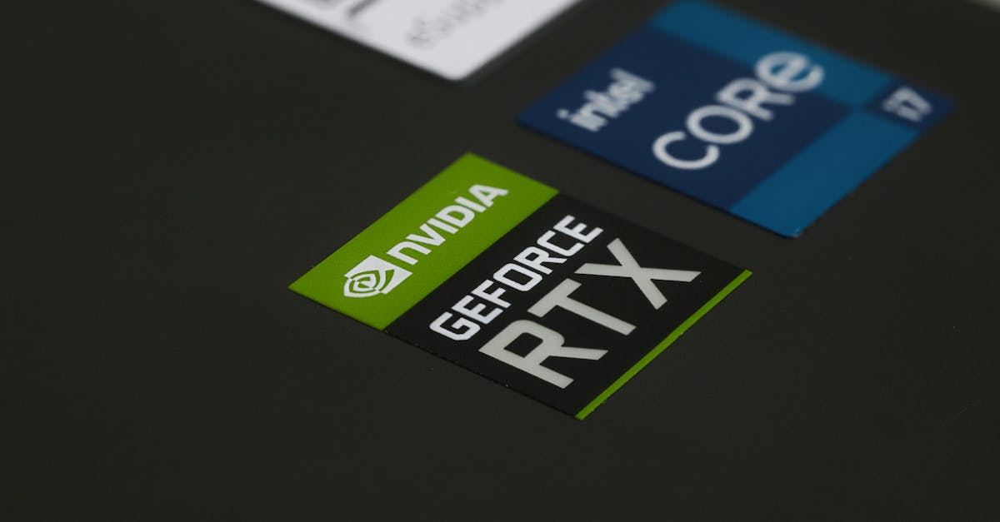

Le Grand Virage d'Apple : Vers une Diversification Stratégique des Puces
L'annonce a fait l'effet d'une onde de choc dans le monde de la technologie et de la finance : Apple Inc., le géant de Cupertino, aurait engagé des discussions exploratoires avec Intel Corp. et Samsung Electronics Co. dans le but de produire les processeurs principaux de ses futurs appareils. Cette démarche, rapportée par Bloomberg Technology, n'est pas anodine ; elle marque un tournant potentiel majeur dans la stratégie d'approvisionnement du groupe, historiquement et massivement dépendant de Taiwan Semiconductor Manufacturing Co. (TSMC).
👉 À lire : L'IA révolutionne la bourse : l'impact sur les puces
Pourquoi cette quête de diversification, après des années de partenariat exclusif avec le leader taïwanais, dont la technologie est réputée inégalée ? La réponse est multiple et s'inscrit dans un contexte géopolitique et économique de plus en plus tendu. La concentration de la production de puces de pointe à Taïwan, une île dont le statut est au cœur des tensions sino-américaines, représente un risque systémique que des entreprises de la taille d'Apple ne peuvent plus ignorer. Une interruption de la chaîne d'approvisionnement, qu'elle soit due à un conflit géopolitique, une catastrophe naturelle ou une pandémie, aurait des conséquences dévastatrices sur la capacité d'Apple à fabriquer ses produits et, par extension, sur l'économie mondiale. Comme le souligne un analyste fictif de Wall Street, « la dépendance à un seul fournisseur, même le meilleur, est une vulnérabilité inacceptable dans le monde volatile d'aujourd'hui. Apple cherche à blinder son futur. »
👉 À lire : Risques Géopolitiques : Pourquoi les marchés oublient la guerre
Cette initiative d'Apple est bien plus qu'une simple renégociation de contrat ; elle témoigne d'une prise de conscience collective de l'impératif de résilience des chaînes d'approvisionnement, un thème central pour toute entreprise technologique, y compris celles qui développent des agents IA pour le trading crypto. La stabilité de l'infrastructure matérielle est la fondation sur laquelle repose toute l'innovation logicielle. Sans puces, pas d'iPhone, pas de serveurs, pas d'IA. C'est une leçon que le marché des semi-conducteurs apprend à ses dépens depuis plusieurs années.

L'Impact sur l'Industrie des Semi-conducteurs : Une Nouvelle Dynamique Compétitive
Si Apple concrétise ces discussions, l'impact sur l'industrie des semi-conducteurs serait colossal. TSMC, bien que restant un partenaire privilégié, verrait sa position de quasi-monopole sur les puces les plus avancées légèrement érodée. Pour Intel, c'est une bouffée d'oxygène majeure et une validation de sa stratégie ambitieuse de services de fonderie (Intel Foundry Services - IFS). Après des années de retard technologique par rapport à TSMC et Samsung, Intel met les bouchées doubles pour regagner du terrain, investissant massivement dans de nouvelles usines et technologies aux États-Unis et en Europe.
L'arrivée d'Apple comme client pour ses fonderies serait un coup de maître pour Intel, lui permettant de financer sa R&D et d'accélérer son retour au premier plan. Samsung, de son côté, est déjà un acteur majeur dans la fonderie et la mémoire, mais sécuriser une part significative de la production d'Apple renforcerait considérablement sa stature et sa capacité d'investissement. Cette compétition accrue pourrait paradoxalement bénéficier à l'ensemble de l'écosystème technologique. « Quand les géants se disputent les faveurs d'Apple, c'est toute l'innovation qui s'accélère, » observe un expert de l'industrie.
- Une concurrence stimulée pousse à :
- La réduction des coûts de production.
- L'amélioration des performances énergétiques.
- Le développement de nouvelles architectures de puces.
Pour les investisseurs, cette dynamique offre de nouvelles perspectives. Les fonds d'investissement et les agents de trading IA qui surveillent les marchés des semi-conducteurs devront ajuster leurs modèles pour intégrer cette redistribution des cartes. Les actions de TSMC pourraient ressentir une pression à la baisse, tandis qu'Intel et Samsung pourraient voir leur valorisation renforcée par cette perspective. La capacité d'une entreprise à diversifier ses fournisseurs stratégiques devient un indicateur clé de sa robustesse et de sa pérennité, un facteur que les algorithmes d'analyse fondamentale ne manqueront pas de prendre en compte.
La Quête de Résilience : Sécurité des Chaînes d'Approvisionnement à l'Ère de l'IA
La pandémie de COVID-19 a mis en lumière la fragilité des chaînes d'approvisionnement mondiales, avec des pénuries de puces qui ont paralysé des industries entières, de l'automobile à l'électronique grand public. Cette crise a servi de catalyseur pour une réévaluation profonde des risques. Apple, avec sa dépendance aux puces de pointe, est particulièrement exposé. L'idée de répartir la production entre plusieurs acteurs et régions géographiques est donc une démarche de gestion des risques essentielle.
Mais au-delà de la simple survie, c'est l'avenir de l'innovation technologique qui est en jeu. L'intelligence artificielle, en particulier, est une technologie vorace en puissance de calcul. Les modèles d'apprentissage automatique, qu'il s'agisse de grands modèles de langage ou d'algorithmes de trading prédictifs, exigent des processeurs toujours plus rapides, plus petits et plus économes en énergie. Une chaîne d'approvisionnement robuste et diversifiée garantit que l'accès à ces composants critiques ne sera pas entravé, permettant ainsi la poursuite du développement et du déploiement de l'IA.
« La sécurité des puces n'est plus seulement une question économique, c'est une question de sécurité nationale et de souveraineté technologique, » a récemment déclaré un conseiller en cybersécurité.
Imaginez un monde où l'accès aux puces de nouvelle génération est restreint ou monopolisé. Cela freinerait non seulement la production de smartphones, mais aussi le développement de l'IA dans des domaines aussi variés que la médecine, la défense et, bien sûr, la finance. Pour les plateformes comme CryptoMind AI, qui s'appuient sur des agents IA pour analyser des téraoctets de données de marché en temps réel et exécuter des trades ultra-rapides, la disponibilité constante de matériel informatique de pointe est non négociable. La diversification d'Apple est donc un signal fort que l'industrie prend au sérieux la nécessité de construire des fondations technologiques plus solides et moins vulnérables aux chocs externes.

Implications Géopolitiques et Économiques : Le Retour de la Production aux USA ?
La décision d'Apple de se tourner potentiellement vers Intel et Samsung s'inscrit parfaitement dans la stratégie des États-Unis de relocaliser une partie de la production de semi-conducteurs sur son sol. Le CHIPS and Science Act, promulgué en 2022, prévoit des dizaines de milliards de dollars de subventions et d'incitations fiscales pour encourager la construction d'usines de puces sur le territoire américain. L'objectif est clair : réduire la dépendance vis-à-vis de l'Asie, notamment Taïwan, et renforcer la sécurité économique et nationale.
Intel, avec ses projets d'expansion massifs en Arizona et en Ohio, est un bénéficiaire direct de cette politique. Samsung construit également une usine de fonderie au Texas. Si Apple fait appel à ces capacités de production américaines, cela représenterait une victoire significative pour l'administration Biden et un pas de plus vers une chaîne d'approvisionnement plus « made in USA ». Cela créerait des milliers d'emplois hautement qualifiés, stimulerait l'innovation locale et renforcerait l'écosystème technologique américain. « C'est un mouvement qui va bien au-delà des résultats financiers d'Apple ; c'est un investissement dans l'avenir stratégique de l'Amérique, » affirme un économiste politique.
Cependant, les défis sont immenses. La construction et l'équipement d'une fonderie de puces coûtent des milliards de dollars et prennent des années. La main-d'œuvre qualifiée est rare. Et le coût de production aux États-Unis reste généralement plus élevé qu'en Asie. Malgré ces obstacles, la volonté politique et stratégique est forte. Pour les investisseurs qui cherchent à anticiper les tendances à long terme, la résilience des chaînes d'approvisionnement et la relocalisation de la production sont des thèmes à surveiller de près. Les entreprises qui s'alignent sur ces mégatendances pourraient bénéficier d'un avantage concurrentiel durable, et leurs actions pourraient être des cibles privilégiées pour des stratégies d'investissement avisées, y compris celles guidées par des algorithmes d'IA capables d'identifier ces signaux faibles.
Au-delà des Smartphones : L'Écho pour l'IA et le Trading Crypto
Alors, quel est le lien entre la stratégie d'approvisionnement en puces d'Apple et le monde du trading crypto alimenté par l'IA ? La connexion est plus profonde qu'il n'y paraît. L'intelligence artificielle est le moteur silencieux de la révolution crypto. Que ce soit pour l'analyse prédictive des marchés, la détection des anomalies, l'optimisation des portefeuilles ou l'exécution de trades à haute fréquence, les agents IA dépendent entièrement de la puissance et de la fiabilité des puces qui les animent.
Un approvisionnement stable et diversifié en semi-conducteurs garantit que les entreprises développant des solutions d'IA, y compris pour le trading crypto, auront accès aux composants nécessaires pour :
- Construire et maintenir des infrastructures de calcul robustes.
- Déployer des modèles d'IA toujours plus complexes et performants.
- Assurer la continuité des opérations sans interruption due à des pénuries matérielles.
Imaginez un instant l'impact d'une pénurie majeure de puces sur les serveurs qui hébergent les agents IA de trading. La latence augmenterait, la capacité de traitement diminuerait, et la réactivité aux mouvements du marché serait compromise. Pour un agent IA qui trade les cryptos 24h/24, chaque milliseconde compte. La diversification d'Apple envoie un signal positif à l'ensemble de l'écosystème technologique : la fondation matérielle de l'innovation est en cours de sécurisation. Une industrie des semi-conducteurs plus résiliente signifie un environnement plus stable pour le développement de l'IA, et par conséquent, pour les outils d'aide à la décision et d'exécution dans le monde des cryptomonnaies.
En tant qu'observateurs des marchés, nous devons comprendre que les mouvements des géants comme Apple ne sont pas isolés. Ils créent des ondes qui se propagent bien au-delà de leur secteur direct, influençant la disponibilité et le coût de la technologie pour tous. C'est une opportunité pour les investisseurs avisés d'identifier les entreprises qui bénéficient de ces tendances macroéconomiques et technologiques, et pour les agents IA de trading de mieux anticiper les dynamiques de marché sous-jacentes.

Conclusion : Vers une Nouvelle Ère de la Technologie et de l'Investissement
Le possible virage d'Apple vers Intel et Samsung pour la production de ses puces principales est bien plus qu'une simple anecdote industrielle. C'est un symptôme et un catalyseur d'une transformation profonde des chaînes d'approvisionnement technologiques, poussée par des impératifs géopolitiques, économiques et de résilience. Cette démarche illustre la prise de conscience que la dépendance excessive à une seule région ou un seul fournisseur est une vulnérabilité inacceptable à l'ère de l'intelligence artificielle et de la concurrence mondiale.
Pour l'industrie des semi-conducteurs, cela promet une nouvelle ère de compétition et d'innovation, avec des acteurs comme Intel qui cherchent à regagner leur place au sommet. Pour les gouvernements, c'est une validation de leurs efforts pour relocaliser la production et renforcer la souveraineté technologique. Et pour l'écosystème de l'IA et du trading crypto, c'est une assurance que les fondations matérielles nécessaires à leur développement continu seront plus solides et moins sujettes aux ruptures.
En fin de compte, la diversification d'Apple est un pas vers un avenir où la technologie est non seulement plus avancée, mais aussi plus résiliente. C'est une tendance que tout investisseur, qu'il s'appuie sur son intuition ou sur la puissance des agents IA de trading, doit intégrer dans son analyse. Car dans un monde où les puces sont le nouveau pétrole, la maîtrise de leur production et de leur approvisionnement est la clé de la puissance économique et de l'innovation de demain.